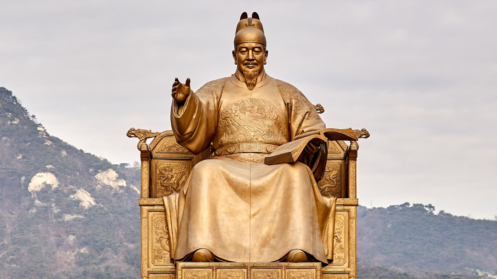

História do país
História do país
Coreia do Sul: um legado de resiliência e transformação ao longo dos séculos.

Cultura coreana
Na Coreia do Sul, a cultura é um mosaico vibrante de tradições e modernidade.
 Pontos turísticos
Pontos turísticos
Um destino onde cada paisagem revela um novo capítulo da beleza e da história.